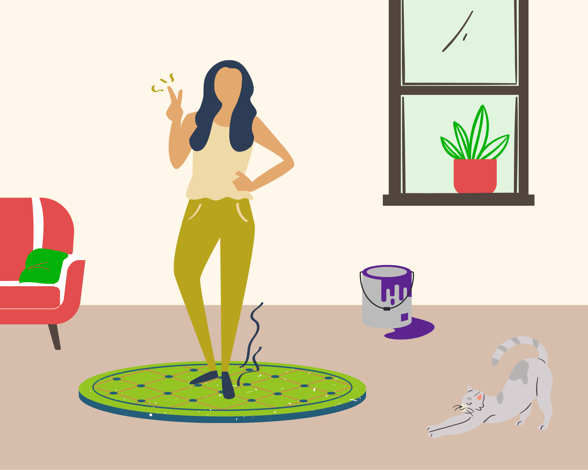

<!DOCTYPE html>
<html>

<head>
    <title>My experiment</title>
    <script src="jspsych-6.3.1/jspsych.js"></script>
    <script src="jspsych-6.3.1/plugins/jspsych-html-keyboard-response.js"></script>
    <script src="jspsych-6.3.1/plugins/jspsych-image-keyboard-response.js"></script>
    <script src="jspsych-6.3.1/plugins/jspsych-audio-keyboard-response.js"></script>
    <script src="jspsych-6.3.1/plugins/jspsych-preload.js"></script>
    <script src="jspsych-6.3.1/plugins/jspsych-fullscreen.js"></script>
    <script src="jspsych-6.3.1/plugins/jspsych-html-button-response.js"></script>
    <script src="jspsych-6.3.1/plugins/jspsych-webgazer-init-camera.js"></script>
    <script src="jspsych-6.3.1/plugins/jspsych-webgazer-calibrate.js"></script>
    <script src="jspsych-6.3.1/plugins/jspsych-webgazer-validate.js"></script>
    <script src="js/webgazer.js"></script>
    <script src="jspsych-6.3.1/extensions/jspsych-ext-webgazer.js"></script>
    <script src="calibration-config.js"></script>
    <script src="initial-calibration-timeline.js"></script>
    <script src="calibration-booster-timeline.js"></script>
    <script src="jspsych-6.3.1/plugins/jspsych-call-function.js"></script>

    <link rel="stylesheet" href="jspsych-6.3.1/css/jspsych.css">
    <style>
        * {
            max-width: 100%;
        }
        
        img {
            width: auto;
            height: 96vh;
            cursor: none;
        }
    </style>

</head>

<body></body>
<script>
    // capture info from Prolific
    var subject_id = jsPsych.data.getURLVariable('PROLIFIC_PID');
    var study_id = jsPsych.data.getURLVariable('STUDY_ID');
    var session_id = jsPsych.data.getURLVariable('SESSION_ID');

    jsPsych.data.addProperties({
        subject_id: subject_id,
        study_id: study_id,
        session_id: session_id
    });

    /*Create Timeline*/
    var timeline = [];

    /*Push the eyetracking calibration in*/
    timeline.push(initial_calibration_timeline);

    /* preload images and audio files:
    Here we preload all the additional jpeg and mp4 files for the experiment. This might look different with many more
    files we will have at the end.*/
    var preload = {
            type: 'preload',
            auto_preload: true
        }
        /*this is how you push to timeline array*/
    timeline.push(preload);

    /* define welcome message trial */
    var welcome = {
        type: "html-keyboard-response",
        stimulus: "Welcome to the experiment. Press any key to begin."
    };
    timeline.push(welcome);

    /* define instructions trial */
    var instructions = {
        type: "html-keyboard-response",
        /* Feel free to edit any of the on screen messages like this one */
        stimulus: `
        <div style="text-align:center"><p>In this experiment, different scenes will appear in the center </p>
        <p>of the screen alongside a voice recording that will be played.</p>
        <p>If the sentence is applicable to the scene, 
        press the letter F on the keyboard.</p>
        <p>If the scene seems to not be applicable, press the letter J.</p>             
        <p>Press any key to begin.</p></div>
       
      `,
        /* This is just to have a 2 seconds long (2000ms) pause between when they
        press continue and when the experiment starts.*/
        post_trial_gap: 2000
    };
    timeline.push(instructions);

    /* Enter the fullscreen mode */
    //var fullscreen_enter = {
    // type: 'fullscreen',
    // fullscreen_mode: true

    //}
    //timeline.push(fullscreen_enter);

    /* make the cursor invisible inside the web browser screen */
    var cursor_off = {
        type: 'call-function',
        func: function() {
            document.body.style.cursor = "none";
        }
    }
    timeline.push(cursor_off);

    /* attemp1 prompt */
    var attempt1_prompt = {
        type: "html-keyboard-response",
        stimulus: `
          <p>Here is trial 1.
          </p> <p>Listen to the sentence: is that sentence possible with the image you see on the screen?</p>
          <p style="text-align:center">F for possible, J for not possible.</p>
          <p style="text-align:center">Press any key to begin.</p>
          `,
        post_trial_gap: 1000
    }
    timeline.push(attempt1_prompt);

    /* Trial attempt 1*/
    var attempt1 = {
        type: "audio-keyboard-response",
        prompt: `</img>
          `,
        stimulus: "audio/1t.mp3",
        choices: ['f', 'j'],
        on_finish: function(data) {
            // Score the response as correct or incorrect.
            if (jsPsych.pluginAPI.compareKeys(data.response, "f")) {
                data.correct = true;
            } else {
                data.correct = false;
            }
        },
        response_allowed_while_playing: false
    };
    timeline.push(attempt1);

    /*post attempt*/
    var postattempt1 = {
        type: "html-keyboard-response",
        stimulus: function() {
            var last_trial_correct = jsPsych.data.get().last(1).values()[0].correct;
            if (last_trial_correct) {
                return "<p>Wrong. There is no fireplace so it is not possible!</p>";
                // the parameter value has to be returned from the function
            } else {
                return "<p> <strong> Good Job! </strong> </p> <p> There is no fireplace, so it is not possible for the person to light the fire. We will have one more trial. </p> <p> Press any key to continue </p>"
                    // the parameter value has to be returned from the function
            }
        }
    };
    timeline.push(postattempt1);

    /*attempt2 prompt*/
    var attempt2_prompt = {
        type: "html-keyboard-response",
        stimulus: `
          <p>Here is trial 2.
          </p> <p>Listen to the sentence: is that sentence possible with the image you see on the screen?</p>
          <p style="text-align:center">Press any key to begin.</p>
          `,
        post_trial_gap: 1000
    }
    timeline.push(attempt2_prompt);

    /* Trial attempt 2*/
    var attempt2 = {
        type: "audio-keyboard-response",
        prompt: `</img>
          `,
        stimulus: "audio/2t.mp3",
        choices: ['f', 'j'],
        on_finish: function(data) {
            // Score the response as correct or incorrect.
            if (jsPsych.pluginAPI.compareKeys(data.response, "f")) {
                data.correct = true;
            } else {
                data.correct = false;
            }
        },
        response_allowed_while_playing: false
    };
    timeline.push(attempt2);

    /*post attempt*/
    var postattemtp2 = {
        type: "html-keyboard-response",
        stimulus: function() {
            var last_trial_correct = jsPsych.data.get().last(1).values()[0].correct;
            if (last_trial_correct) {
                return "<p> <strong> Good Job! </strong> </p><p> There is a postman and the postman can ride the bike. Now that you understand, we will continue with the experiment. Please remember to keep your head as still as possible </p> <p> Press any key to continue </p>";
                // the parameter value has to be returned from the function
            } else {
                return "<p>Wrong. There is a postman and the postman can ride the bike!</p><p>Now that you understand, we will continue with the experiment. Please remember to keep your head as still as possible </p> <p> Press any key to continue </p>";
                // the parameter value has to be returned from the function
            }
        },
        post_trial_gap: 2000
    };
    timeline.push(postattemtp2);

    ///////////////////////////////////////////////////////////////////////////////////////////
    ///////////////////////////////////////TEST STIMULI////////////////////////////////////////
    ///////////////////////////////////////////////////////////////////////////////////////////

    /* Create the test stimuli as timeline variables*/
    var test_stimuli = [

        /*verb type array*/
        //  {
        //verb_type: ['restricting', 'non-restricting', 'NA']
        //},

        /*critical scenes*/
        {
            scene: 'scene/c1.png',
            stimulus: ['audio/1r.mp3', 'audio/1nr.mp3'],
            verb_type: ['restricting', 'non-restricting', 'NA']
        }, {
            scene: 'scene/c2.png',
            stimulus: ['audio/2r.mp3', 'audio/2nr.mp3'],
            verb_type: ['restricting', 'non-restricting', 'NA']
        }, {
            scene: 'scene/c3.png',
            stimulus: ['audio/3r.mp3', 'audio/3nr.mp3'],
            verb_type: ['restricting', 'non-restricting', 'NA']
        }, {
            scene: 'scene/c4.png',
            stimulus: ['audio/4r.mp3', 'audio/4nr.mp3'],
            verb_type: ['restricting', 'non-restricting', 'NA']
        }, {
            scene: 'scene/c5.png',
            stimulus: ['audio/5r.mp3', 'audio/5nr.mp3'],
            verb_type: ['restricting', 'non-restricting', 'NA']
        }, {
            scene: 'scene/c6.png',
            stimulus: ['audio/6r.mp3', 'audio/6nr.mp3'],
            verb_type: ['restricting', 'non-restricting', 'NA']
        }, {
            scene: 'scene/c7.png',
            stimulus: ['audio/7r.mp3', 'audio/7nr.mp3'],
            verb_type: ['restricting', 'non-restricting', 'NA']
        }, {
            scene: 'scene/c8.png',
            stimulus: ['audio/8r.mp3', 'audio/8nr.mp3'],
            verb_type: ['restricting', 'non-restricting', 'NA']
        }, {
            scene: 'scene/c9.png',
            stimulus: ['audio/9r.mp3', 'audio/9nr.mp3'],
            verb_type: ['restricting', 'non-restricting', 'NA']
        }, {
            scene: 'scene/c10.png',
            stimulus: ['audio/10r.mp3', 'audio/10nr.mp3'],
            verb_type: ['restricting', 'non-restricting', 'NA']
        }, {
            scene: 'scene/c11.png',
            stimulus: ['audio/11r.mp3', 'audio/11nr.mp3'],
            verb_type: ['restricting', 'non-restricting', 'NA']
        }, {
            scene: 'scene/c12.png',
            stimulus: ['audio/12r.mp3', 'audio/12nr.mp3'],
            verb_type: ['restricting', 'non-restricting', 'NA']
        }, {
            scene: 'scene/c13.png',
            stimulus: ['audio/13r.mp3', 'audio/13nr.mp3'],
            verb_type: ['restricting', 'non-restricting', 'NA']
        }, {
            scene: 'scene/c14.png',
            stimulus: ['audio/14r.mp3', 'audio/14nr.mp3'],
            verb_type: ['restricting', 'non-restricting', 'NA']
        }, {
            scene: 'scene/c15.png',
            stimulus: ['audio/15r.mp3', 'audio/15nr.mp3'],
            verb_type: ['restricting', 'non-restricting', 'NA']
        }, {
            scene: 'scene/c16.png',
            stimulus: ['audio/16r.mp3', 'audio/16nr.mp3'],
            verb_type: ['restricting', 'non-restricting', 'NA']
        },
        /*filler scenes*/
        {
            scene: 'scene/f1.png',
            stimulus: ['audio/1f.mp3'],
            verb_type: ['NA']
        }, {
            scene: 'scene/f2.png',
            stimulus: ['audio/2f.mp3'],
            verb_type: ['NA']
        }, {
            scene: 'scene/f3.png',
            stimulus: ['audio/3f.mp3'],
            verb_type: ['NA']
        }, {
            scene: 'scene/f4.png',
            stimulus: ['audio/4f.mp3'],
            verb_type: ['NA']
        }, {
            scene: 'scene/f5.png',
            stimulus: ['audio/5f.mp3'],
            verb_type: ['NA']
        }, {
            scene: 'scene/f6.png',
            stimulus: ['audio/6f.mp3'],
            verb_type: ['NA']
        }, {
            scene: 'scene/f7.png',
            stimulus: ['audio/7f.mp3'],
            verb_type: ['NA']
        }, {
            scene: 'scene/f8.png',
            stimulus: ['audio/8f.mp3'],
            verb_type: ['NA']
        }, {
            scene: 'scene/f9.png',
            stimulus: ['audio/9f.mp3'],
            verb_type: ['NA']
        }, {
            scene: 'scene/f10.png',
            stimulus: ['audio/10f.mp3'],
            verb_type: ['NA']
        }, {
            scene: 'scene/f11.png',
            stimulus: ['audio/11f.mp3'],
            verb_type: ['NA']
        }, {
            scene: 'scene/f12.png',
            stimulus: ['audio/12f.mp3'],
            verb_type: ['NA']
        }, {
            scene: 'scene/f13.png',
            stimulus: ['audio/13f.mp3'],
            verb_type: ['NA']
        }, {
            scene: 'scene/f14.png',
            stimulus: ['audio/14f.mp3'],
            verb_type: ['NA']
        }, {
            scene: 'scene/f15.png',
            stimulus: ['audio/15f.mp3'],
            verb_type: ['NA']
        }, {
            scene: 'scene/f16.png',
            stimulus: ['audio/16f.mp3'],
            verb_type: ['NA']
        }
    ];

    ///////////////////////////////////////////////////////////////////////////////////////////
    ///////////////////////////////////////SHUFFLE FUNCTION////////////////////////////////////
    ///////////////////////////////////////////////////////////////////////////////////////////

    function shuffle(a) {
        var j, x, i;
        for (i = a.length - 1; i > 0; i--) {
            j = Math.floor(Math.random() * (i + 1));
            x = a[i];
            a[i] = a[j];
            a[j] = x;
        }
        return a;
    }
    choose = [0, 0, 0, 0, 0, 0, 0, 0, 1, 1, 1, 1, 1, 1, 1, 1]
    shuffle(choose)

    /////////////////////////////////////////////////////////////////////////////////////////// 
    ////////////////////////////////////////EVERY TRIAL////////////////////////////////////////
    ///////////////////////////////////////////////////////////////////////////////////////////
    i = 0

    /* All the trials, gets a keyboard response after the audio is presented.*/
    var trials = {
        type: 'audio-keyboard-response',
        stimulus: function() {
            if (jsPsych.timelineVariable('stimulus').length > 1) {
                //console.log(jsPsych.timelineVariable('stimulus').length)
                stimulus = jsPsych.timelineVariable('stimulus')[choose[i]]

            } else {
                //console.log(jsPsych.timelineVariable('stimulus').length)
                stimulus = jsPsych.timelineVariable('stimulus')[0]
            }
            return stimulus;
        },
        choices: ['f', 'j'],
        /* How you put the scene inside this trial,
        this is a html code to embed the image inside the webpage.*/
        prompt: function() {
            prompt = "<p></img></p>"
            return prompt;
        },
        response_ends_trial: true,
        response_allowed_while_playing: false,
        data: {
            verb_type: function() {
                if (jsPsych.timelineVariable('stimulus').length > 1) {
                    verb_type = jsPsych.timelineVariable('verb_type')[choose[i]]
                } else {
                    verb_type = jsPsych.timelineVariable('verb_type')[0]
                }
                return verb_type;
            },
        },
        on_finish: function() {
            if (jsPsych.timelineVariable('stimulus').length > 1) {
                i++
            }
        }
    };

    ///////////////////////////////////////////////////////////////////////////////////////////
    /////////////////////////////////////////TEST PROCEDURE////////////////////////////////////
    ///////////////////////////////////////////////////////////////////////////////////////////

    var test_procedure = {
        timeline: [trials],
        timeline_variables: test_stimuli,
        randomize_order: true

    }
    timeline.push(test_procedure);

    ///////////////////////////////////////////////////////////////////////////////////////////
    /////////////////////////////////////////EXPERIMENT INITIATION/////////////////////////////
    ///////////////////////////////////////////////////////////////////////////////////////////


    var final_trial = {
        type: 'html-keyboard-response',
        stimulus: `<p>You've finished the last task. Thanks for participating!</p>
    <p><a href="https://app.prolific.co/submissions/complete?cc=XXXXXXX">Click here to return to Prolific and complete the study</a>.</p>`,
        choices: jsPsych.NO_KEYS
    }

    /* start the experiment */
    jsPsych.init({
        timeline: timeline,
        on_finish: function() {
            jsPsych.data.get().localSave('csv', 'mydata.csv');
            //jsPsych.data.displayData();
        },
        extensions: [{
            type: 'webgazer'
        }]
    });
</script>

</html>